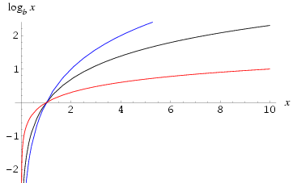
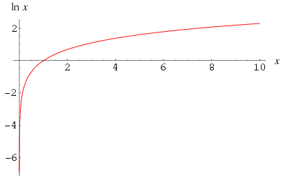

Two common logarithms have special names, due to their freqent use. log_{10}x is called the common logarithm and is notated log xlog_e x where
e = 2.718
is called the "natural logarithm or naperian logarithm" and uses the notation
ln x.
Note that while logarithm base 10 is denoted log x in this work, on calculators, and in elementary algebra and calculus textbooks, mathematicians and advanced mathematics texts uniformly use the notation log_x to mean ln x, and therefore use log_{10}x to mean the common logarithm. Extreme care is therefore needed when consulting the literature.

log_{10}100 = log \ 100 = 2

Definition: ln(x) = \int_1^x {1 \over t} dt \ \ for \ \ x > 0the \ natural \ logarithm \ is \ the \ logarithm \ having \ the \ base \ e \ wheree = 2.718
Some fundamental rules for logarithms
log A*B = log A + log Blog {A \over B} = log A - log Blog A^n = n log Alog 1 = 0log_b b = 1ln e = 1ln 1 = 0
There is a singularity at the logarithm at 0
Derivatives
D_x(ln x) = {1 \over x}D_x(ln f') = {1 \over f}f'
Limits
{lim \over {x \rightarrow 0}}(ln x) =
Integrals
\int ln x dx = u ln u - u + C\int {1 \over {ax + b}} dx = {1 \over a}ln \mid ax + b \mid + C where a > 0